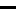

<!doctype html>
<html lang="en">
    <head>
        <meta charset="utf-8">
        <meta http-equiv="X-UA-Compatible" content="IE=edge">
        <meta name="viewport" content="initial-scale=1,user-scalable=no,maximum-scale=1,width=device-width">
        <meta name="mobile-web-app-capable" content="yes">
        <meta name="apple-mobile-web-app-capable" content="yes">
         <link rel="stylesheet" href="https://unpkg.com/leaflet@1.6.0/dist/leaflet.css"
		integrity="sha512-xwE/Az9zrjBIphAcBb3F6JVqxf46+CDLwfLMHloNu6KEQCAWi6HcDUbeOfBIptF7tcCzusKFjFw2yuvEpDL9wQ=="
		crossorigin=""/>
		<link rel="stylesheet" href="https://cdnjs.cloudflare.com/ajax/libs/leaflet-locatecontrol/0.70.0/L.Control.Locate.min.css">
        <link rel="stylesheet" href="css/qgis2web.css">
		<link rel="stylesheet" href="css/fontawesome-all.min.css">
        <link rel="stylesheet" href="https://github.com/stefanocudini/leaflet-search/blob/master/src/leaflet-search.css">
        <link rel="stylesheet" href="css/leaflet-control-geocoder.Geocoder.css">
        <link rel="stylesheet" href="css/MarkerCluster.css" />
		<link rel="stylesheet" href="css/lib/MarkerCluster.Default.css" />
		<style>
        html, body, #map {
            width: 100%;
            height: 100%;
            padding: 0;
            margin: 0;
        }
        </style>
        <title></title>
    </head>
    <body>
        <div id="map">
        </div>
		<script src="js/leaflet.markercluster-src.js"></script>
		<script src="https://github.com/joker-x/Leaflet.geoCSV/blob/master/leaflet.geocsv-src.js"></script>
		<script type="text/javascript" src="data/fotomultas.js"></script>
        <script src="js/qgis2web_expressions.js"></script>
        <script src="https://unpkg.com/leaflet@1.6.0/dist/leaflet.js"
		integrity="sha512-gZwIG9x3wUXg2hdXF6+rVkLF/0Vi9U8D2Ntg4Ga5I5BZpVkVxlJWbSQtXPSiUTtC0TjtGOmxa1AJPuV0CPthew=="
		crossorigin=""></script>
		<script src="https://cdnjs.cloudflare.com/ajax/libs/leaflet-locatecontrol/0.70.0/L.Control.Locate.min.js"></script>
        <script src="js/multi-style-layer.js"></script>
        <script src="js/leaflet.rotatedMarker.js"></script>
        <script src="js/leaflet.pattern.js"></script>
        <script src="js/leaflet-hash.js"></script>
        <script src="js/Autolinker.min.js"></script>
        <script src="js/rbush.min.js"></script>
        <script src="js/labelgun.min.js"></script>
        <script src="js/labels.js"></script>
        <script src="js/leaflet-control-geocoder.Geocoder.js"></script>
        <script src="https://github.com/stefanocudini/leaflet-search/blob/master/src/leaflet-search.js"></script>
        <script src="data/parqueaderos_1.js"></script>
        <script>

        var highlightLayer;
        function highlightFeature(e) {
            highlightLayer = e.target;

            if (e.target.feature.geometry.type === 'LineString') {
              highlightLayer.setStyle({
                color: '#ffff00',
              });
            } else {
              highlightLayer.setStyle({
                fillColor: '#ffff00',
                fillOpacity: 1
              });
            }
            highlightLayer.openPopup();
        }
        var map = L.map('map', {
            zoomControl:true, maxZoom:28, minZoom:1
        })
		
		/*AGREGAR CSV*/
		/*var bankias = L.geoCsv(null, {
			onEachFeature: function (feature, layer) {
				var popup = '';
				for (var clave in feature.properties) {
					var title = bankias.getPropertyTitle(clave);
					popup += '<b>'+title+'</b><br />'+feature.properties[clave]+'<br /><br />';
				}
				layer.bindPopup(popup);
			},
			pointToLayer: function (feature, latlng) {
				return L.marker(latlng, {
					icon:L.icon({
						iconUrl: 'marker-icon.png',
						shadowUrl: 'marker-shadow.png',
						iconSize: [25,41],
						shadowSize:   [41, 41],
						shadowAnchor: [13, 20]
					})
				});
			},
			firstLineTitles: true
		});
		

		$.ajax ({
			type:'GET',
			dataType:'text',
			url:'ejemplo.csv',
			error: function() {
			alert('No se pudieron cargar los datos');
		},
		success: function(csv) {
			var cluster = new L.MarkerClusterGroup();
			bankias.addData(csv);
			cluster.addLayer(bankias);
			mapa.addLayer(cluster);
			mapa.fitBounds(cluster.getBounds());
		},
		complete: function() {
			$('#cargando').delay(100).fadeOut('slow');
			}
		});
		
		$('#localizame').click(function(e) {
		mapa.locate();
		$('#localizame').text('Localizando...');
		mapa.on('locationfound', function(e) { 
		mapa.setView(e.latlng, 15);
		$('#localizame').text('Bankias cercanos');
		});
		});
		
		/*MARCADOR EN LA CALLE 16 CON CARRERA 86*/
		var marker = L.marker([3.37963, -76.52881]).addTo(map);
		
		/*CIRCULO EN CARRERA 100 CON CALLE 13*/
		var circle = L.circle([3.37121, -76.53714], {
			color: 'green',
			fillColor: '#19544B',
			fillOpacity: 0.5,
			radius: 250
		}).addTo(map);
		
		/*POLIGONO EN CALLE 16 CON CARRERA 105*/
		var polygon = L.polygon([
			[3.36408, -76.53313],
			[3.36487, -76.53134],
			[3.36249, -76.53150]
		]).addTo(map);
		
		/*WMS COMUNAS*/
		var wmsLayer = L.tileLayer.wms('http://ws-idesc.cali.gov.co:8081/geoserver/wms?service=WMS&version=1.1.0', {layers:'idesc:mc_comunas'}).addTo(map);
		
		/*Geojson agregado*/
		function popup(feature, layer) { 
		if (feature.properties && feature.properties.direccion) 
		{ 
		layer.bindPopup(feature.properties.direccion); 
		} 
		}

		var fotom = geojson = L.geoJson(fotomultas, {/*icon: greenIcon ,*/onEachFeature: popup}) 
		.addTo(map);
				
		
		
		//----------------------------------------------------------------------------
		
        var hash = new L.Hash(map);
        map.attributionControl.setPrefix('<a href="https://github.com/tomchadwin/qgis2web" target="_blank">qgis2web</a> &middot; <a href="https://leafletjs.com" title="A JS library for interactive maps">Leaflet</a> &middot; <a href="https://qgis.org">QGIS</a>');
        L.control.locate({locateOptions: {maxZoom: 19}}).addTo(map);
        var bounds_group = new L.featureGroup([]);
        function setBounds() {
            if (bounds_group.getLayers().length) {
                map.fitBounds(bounds_group.getBounds());
            }
        }
        var layer_OpenStreetMap_0 = L.tileLayer('http://a.tile.openstreetmap.org/{z}/{x}/{y}.png', {
            opacity: 1.0,
            attribution: '',
            minZoom: 1,
            maxZoom: 28,
            minNativeZoom: 0,
            maxNativeZoom: 19
        });
        layer_OpenStreetMap_0;
        map.addLayer(layer_OpenStreetMap_0);
        function pop_parqueaderos_1(feature, layer) {
            layer.on({
                mouseout: function(e) {
                    for (i in e.target._eventParents) {
                        e.target._eventParents[i].resetStyle(e.target);
                    }
                    if (typeof layer.closePopup == 'function') {
                        layer.closePopup();
                    } else {
                        layer.eachLayer(function(feature){
                            feature.closePopup()
                        });
                    }
                },
                mouseover: highlightFeature,
            });
            var popupContent = '<table>\
                    <tr>\
                        <th scope="row">id_pq</th>\
                        <td>' + (feature.properties['id_pq'] !== null ? Autolinker.link(feature.properties['id_pq'].toLocaleString(), {truncate: {length: 30, location: 'smart'}}) : '') + '</td>\
                    </tr>\
                    <tr>\
                        <th scope="row">servicios</th>\
                        <td>' + (feature.properties['servicios'] !== null ? Autolinker.link(feature.properties['servicios'].toLocaleString(), {truncate: {length: 30, location: 'smart'}}) : '') + '</td>\
                    </tr>\
                    <tr>\
                        <th scope="row">direccion</th>\
                        <td>' + (feature.properties['direccion'] !== null ? Autolinker.link(feature.properties['direccion'].toLocaleString(), {truncate: {length: 30, location: 'smart'}}) : '') + '</td>\
                    </tr>\
                    <tr>\
                        <th scope="row">nombre</th>\
                        <td>' + (feature.properties['nombre'] !== null ? Autolinker.link(feature.properties['nombre'].toLocaleString(), {truncate: {length: 30, location: 'smart'}}) : '') + '</td>\
                    </tr>\
                </table>';
            layer.bindPopup(popupContent, {maxHeight: 400});
        }

        function style_parqueaderos_1_0() {
            return {
                pane: 'pane_parqueaderos_1',
                radius: 6.4,
                opacity: 1,
                color: 'rgba(0,0,0,1.0)',
                dashArray: '',
                lineCap: 'butt',
                lineJoin: 'miter',
                weight: 1.0,
                fill: true,
                fillOpacity: 1,
                fillColor: 'rgba(19,29,225,1.0)',
                interactive: true,
            }
        }
        function style_parqueaderos_1_1() {
            return {
                pane: 'pane_parqueaderos_1',
                radius: 1.4,
                opacity: 1,
                color: 'rgba(0,0,0,1.0)',
                dashArray: '1,5',
                lineCap: 'butt',
                lineJoin: 'miter',
                weight: 2.0,
                fill: true,
                fillOpacity: 1,
                fillColor: 'rgba(19,29,225,1.0)',
                interactive: true,
            }
        }
        map.createPane('pane_parqueaderos_1');
        map.getPane('pane_parqueaderos_1').style.zIndex = 401;
        map.getPane('pane_parqueaderos_1').style['mix-blend-mode'] = 'normal';
        var layer_parqueaderos_1 = new L.geoJson.multiStyle(json_parqueaderos_1, {
            attribution: '',
            interactive: true,
            dataVar: 'json_parqueaderos_1',
            layerName: 'layer_parqueaderos_1',
            pane: 'pane_parqueaderos_1',
            onEachFeature: pop_parqueaderos_1,
            pointToLayers: [function (feature, latlng) {
                var context = {
                    feature: feature,
                    variables: {}
                };
                return L.circleMarker(latlng, style_parqueaderos_1_0(feature));
            },function (feature, latlng) {
                var context = {
                    feature: feature,
                    variables: {}
                };
                return L.circleMarker(latlng, style_parqueaderos_1_1(feature));
            },
        ]});
        bounds_group.addLayer(layer_parqueaderos_1);
        map.addLayer(layer_parqueaderos_1);
        var osmGeocoder = new L.Control.Geocoder({
            collapsed: true,
            position: 'topleft',
            text: 'Search',
            title: 'Testing'
        }).addTo(map);
        document.getElementsByClassName('leaflet-control-geocoder-icon')[0]
        .className += ' fa fa-search';
        document.getElementsByClassName('leaflet-control-geocoder-icon')[0]
        .title += 'Search for a place';
        var baseMaps = {};
        L.control.layers(baseMaps,{' parqueaderos': layer_parqueaderos_1, "OpenStreetMap": layer_OpenStreetMap_0,
		' circulo creado': circle, ' poligono creado': polygon,
		' marca creada': marker, ' comunas': wmsLayer, 
		' fotomultas': fotom}).addTo(map);
        setBounds();
        map.addControl(new L.Control.Search({
            layer: layer_parqueaderos_1,
            initial: false,
            hideMarkerOnCollapse: true,
            propertyName: 'id_pq'}));
        document.getElementsByClassName('search-button')[0].className +=
         ' fa fa-binoculars';
		 
		
		 
		 
		
        </script>
	
    </body>
</html>
